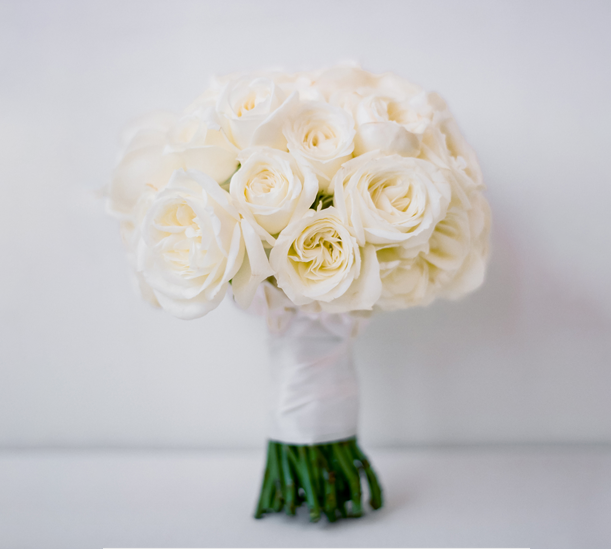
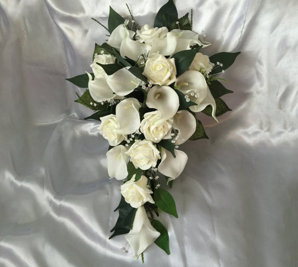
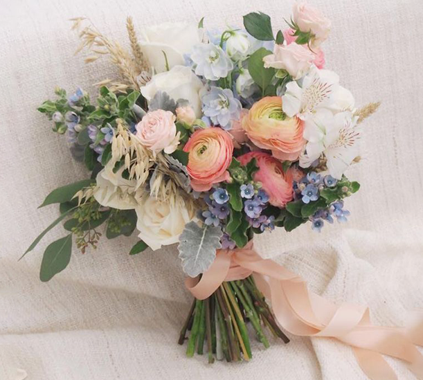
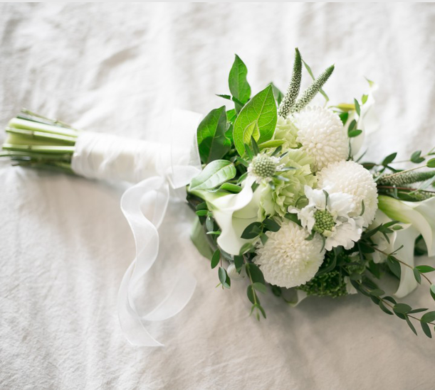

Bouquet
Wedding Flower
혼례식에서 신부가 손에드는 꽃다발로 결혼하는 신부가 앞으로 풍요롭게 살며 맑은 아이를 낳기를 기원하는 뜻을 갖는 부케. 다양한 꽃말을 가진 부케를 선물하세요.
Various types of bouquets
다양한 종류의 부케를 만나보세요
- 
-
Brilliant The Day
Round Bouquet
모든 드레스와 잘 어울리는 가장 무난한 기본적인 라운드형 부케입니다. 깔끔하고 다채로운 컬러의 꽃들을 섞을 수 있어 사랑스럽고 로맨틱한 부케입니다.
READ
-
Brilliant The Day
Cascade Bouquet
벨라인 드레스와 잘 어울리는 폭포를 연상시키는 모양으로 늘어짐이 포인트가 되어주며 부케 자체가 화려한 느낌을 주기 때문에 더욱 빛을 발하는 케스케이드 부케입니다.
READ - 
- 
-
Brilliant The Day
Handtide Bouquet
이국적인 느낌의 꽃들의 줄기를 심플하게 묶어 만든 부케로 주로 야외 결혼식에서 많이 사용되며 세련된 분위기를 주는 핸드타이드 부케입니다. 이 부케는 화려한 웨딩드레스보다는 슬림한 드레스와 더 잘 어울립니다.
READ
-
Brilliant The Day
Ansip Bouquet
가장 인기있는 부케로 긴 줄기가 특징이며, 크지 않고 아담해 스몰웨딩이나 셀프웨딩에서 주로 사용합니다. 고급스러우면서 러블리한 느낌을 주는 부케입니다.
READ - 